The news-sentiment-ai-trader is built on a three-layer architecture that bridges high-level natural language processing with low-level market execution. The system leverages Large Language Models (LLMs) to interpret financial news and translate qualitative sentiment into quantitative trading signals.
The system's modular design separates concerns into three distinct domains:
agent-swarm-kit and powered by Ollama. This layer transforms raw news text and market candle data into a structured ForecastResponseContract.The following diagram illustrates the transformation of data from a news event to a finalized trade execution.
Figure 1: News-to-Trade Data Flow

The inference pipeline is defined in the logic/ directory. It uses a "Russian macro-analyst" persona to evaluate news. The core logic is encapsulated in the addOutline registration, which binds the LLM to specific "Advisors" (data providers).
NEWS_WINDOW (typically 24 hours).OllamaOutlineToolCompletion) and structured JSON mode (OllamaOutlineFormatCompletion) to ensure the LLM returns valid, parseable data.The strategy acts as the glue between the LLM output and the execution engine. It maps LLM sentiment labels (bullish, bearish, sideways) to trading directions.
| LLM Sentiment | Trade Signal | Execution Action |
|---|---|---|
bullish |
LONG |
Open long position at next candle |
bearish |
SHORT |
Open short position at next candle |
sideways / neutral |
WAIT |
Close existing or stay idle |
The backtest-kit framework provides the state machine for signals. A signal transitions through the following states: idle → scheduled → opened → active → closed.
The following diagrams bridge the gap between abstract system concepts and concrete code entities.
Figure 2: Component-to-Code Mapping

Figure 3: backtest-kit Internal Structure

The transformation process is strictly sequential to prevent look-ahead bias during backtesting:
TavilyNewsAdvisor queries the API. In backtest mode, it uses a file-based cache to simulate historical news availability.StockData1mAdvisor. It outputs a reasoning string and a sentiment score.feb_2026_strategy.ts) receives the forecast. If the confidence exceeds thresholds and the sentiment has flipped, a new signal is emitted.Backtest engine picks up the signal, validates it against risk rules (like CC_MAX_STOPLOSS_DISTANCE_PERCENT), and executes the trade at the opening price of the next minute candle.